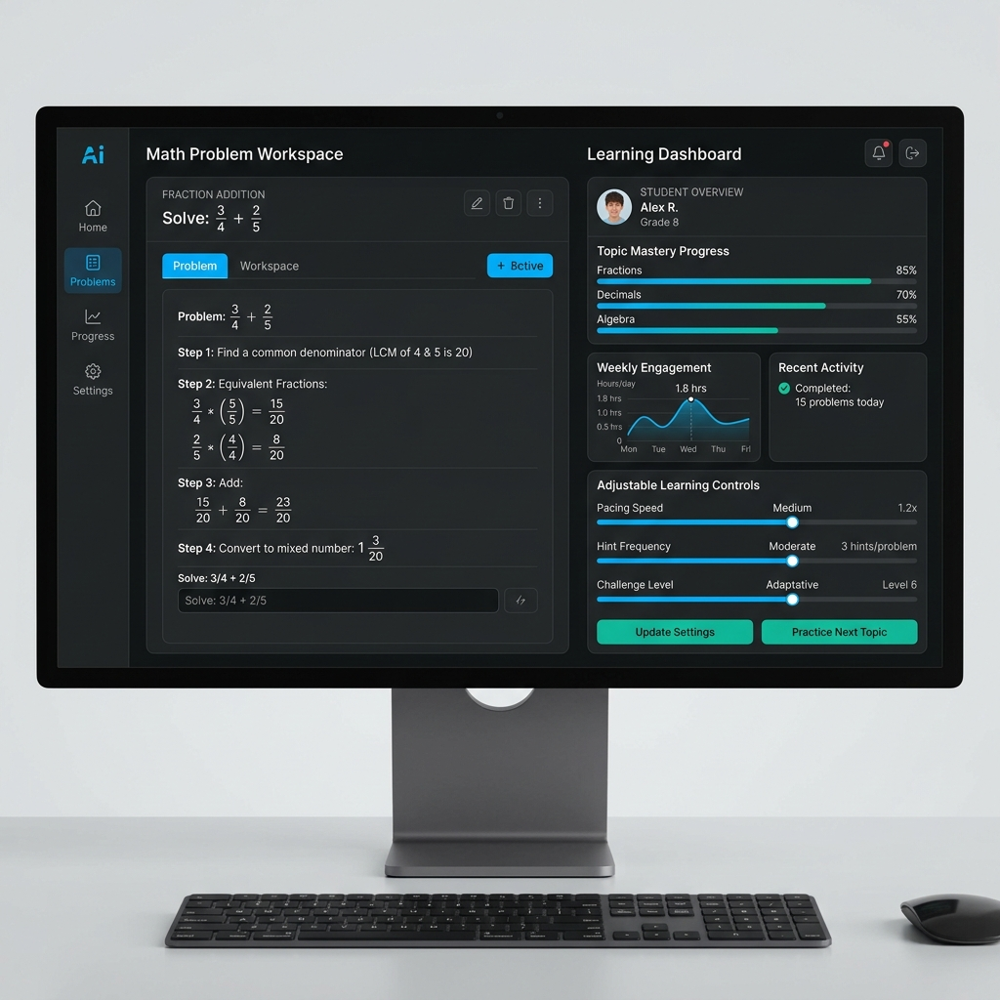

A collection of my academic research papers, project reports, and interface evaluation studies.

A Human-Computer Interaction research paper introducing LEO (Learning Education Operative), an intelligent tutoring environment for grades 6 to 12. The system addresses opaque adaptation and limited user control by integrating explainable dialogue feedback, visual reasoning traces, and direct student control over tutoring parameters.
A distributed systems project report on building a fault-tolerant transaction processing pipeline. The system implements passive replication of transaction ingestion, a majority quorum consensus mechanism with three payment processors to prevent double charges, and a causal transformer neural network model to perform real-time fraud detection.
A survey study analyzing how mobile users interpret iOS permission flows, settings, and privacy documentation for ChatGPT and Siri. The research examines how interface design features like preselection, obstruction, and semantic ambiguity affect user consent, and suggests design guidelines to improve transparency in mobile AI interfaces.
A database systems project evaluating two transactional concurrency control protocols, Optimistic Concurrency Control (OCC) and Conservative Two-Phase Locking (C2PL), built on top of a RocksDB storage layer. The paper evaluates their performance and scaling under varying thread parallelism and hot-key data contention.